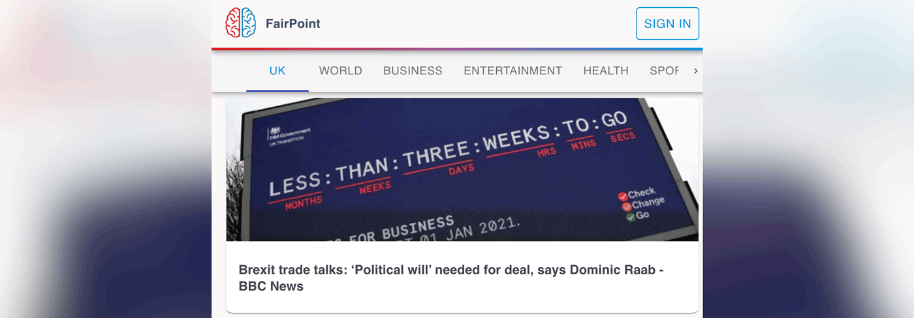

FairPoint News
FairPoint is a news-aggregator that allows you read current news and track the political bias of what you’re reading. I worked as a full stack engineer and product manager with 3 other developers - supporting development of the back end aggregator algorithm and integration with front end as well as UX, design & component development. I managed FairPoint's deployment on Heroku and team git flow.
Tech-stack: Node.js, Express, MongoDB, Heroku, Puppeteer, Passport, React, Material-UI, Chart.js